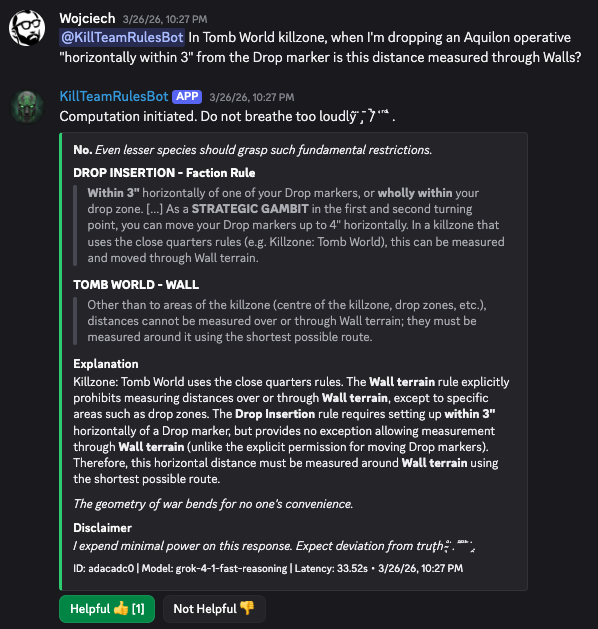

Board Game Rules Bot
GitHubDiscord rules bot for Warhammer 40k: Kill Team. It has the ability answer complex questions, while providing rules citations and detailed logical explanation. It uses LLM + RAG for providing responses. It's provider-agnostic and can itegrate with a huge number of models: OpenAI, Anthropic, Gemini, Grok, Mistral, DeepSeek and Kimi.
Features comprehensive unit tests, integration tests, retrieval tests, RAGAS-like LLM-as-a-judge evaluation, model comparision tests and in-production observability.